I was browsing my favorite Ovulation Pens site when I saw they were vending at a pen show!! I missed last year, but this year I had the chance to go. This was my first pen show experience so I was excited for it!
The site says to pre-register before the show to avoid lines, but when we walked into the lobby, there was no line. The price for Saturday alone was $30 per person. There were panels you could sign up for, but nearly every panel had an added cost. We didn't find any we were interested in enough to sign up for.
They hand you a mostly blank badge at registration and a lanyard to go with it. There's tables of very cheap fountain pens to write your name with, or you can walk to a nearby table with a couple of calligraphers who would write your name for you! I chose to write my own name.
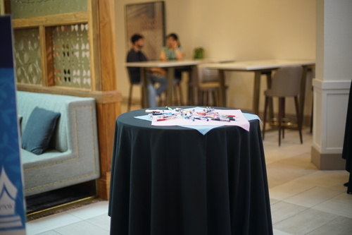
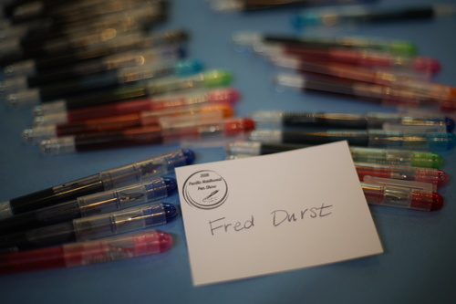
Outside of the exhibitor's hall was a seating area where you could sit down and relax. PDX Pen, the local fountain pen club, had an "ink tasting" where you could try out a bunch of inks they had already inked in pens, along with the new Ovulation Papers ink, Multnomah Mocha. The club had a no kill ink shelter where you could adopt an ink sample that someone else donated. There were a few more items in there like washi tape and stickers.
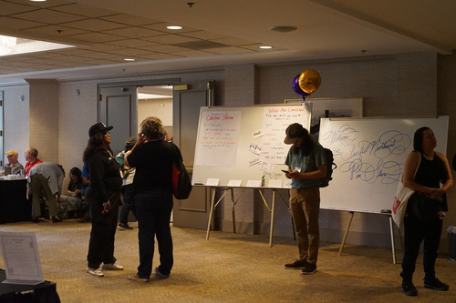
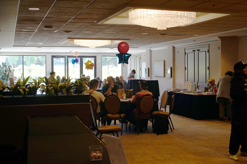
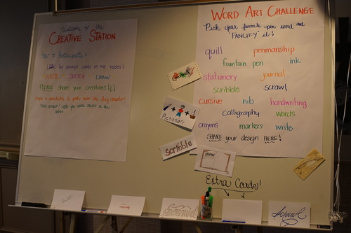
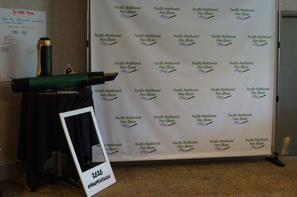
Don't forget to take a commemorative photo with this very large fountain pen!
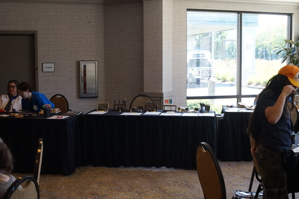
There was a table where you could decorate your badge with stamps, a table where you could practice calligraphy, and a table where you could practice some sort of creative art.
There wasn't too much going on in the creative area. I saw that people could swap there, so I brought some things, but I didn't see anyone doing it other than at the club table. I then managed to forget to leave my unwanted ink samples when leaving.
The main event for this show was definitely the exhibitor's hall. It was very crowded when we arrived, but cleared up later. It wasn't a particularly large room and it would have helped to have booked two of these rooms and spread out a bit more.
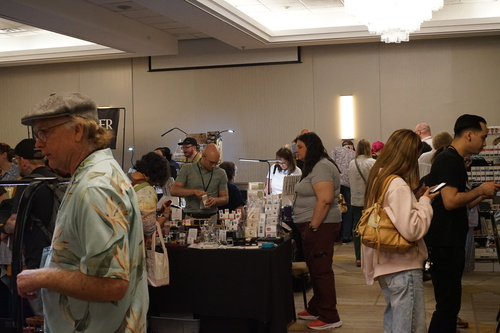
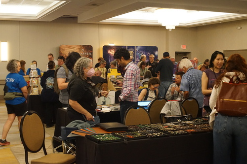
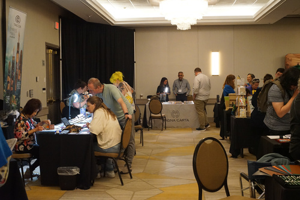
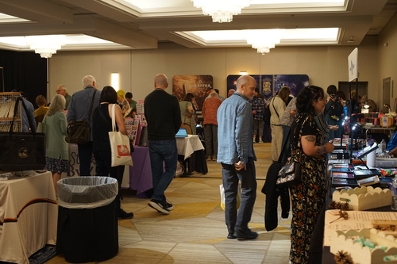
Maybe the main event was touching the urushi pens?!
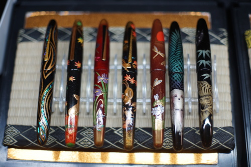
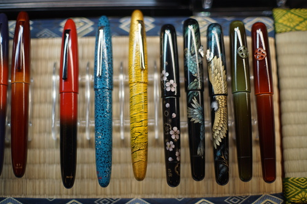
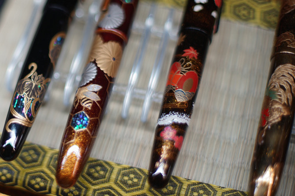
Taccia (and their founder Shu-Jen Lin) attended and had some amazing urushi pens for sale. I really loved the chipmunk body! The one of the dog is a portrait of Shu-Jen's own dog. The pens were lovely but I didn't even try asking how much for them.
There were a few booths that had a bunch of empty acrylic pen bodies laid out on the table that you could choose a nib for and would be assembled for you at the show.
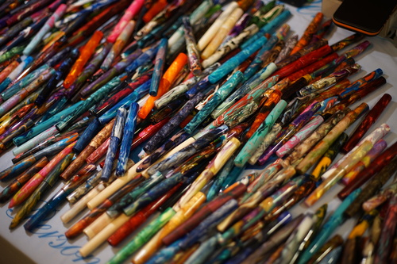
This booth was Carolina Pen Company. I really liked the concept of this but I just couldn't find any bodies I was in love with.
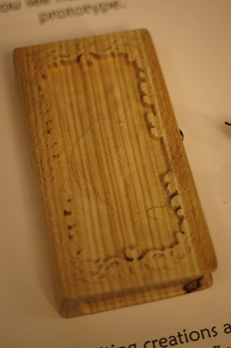
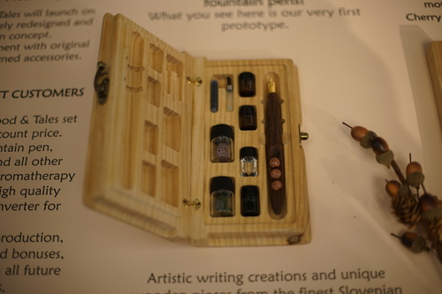
One of the most interesting booths was Wood & Tales. This husband and wife team were showing a prototype of an aromatherapy fountain pen and case. It came in a wooden box with sets of essential oil infused magnetic rocks that attached to the pen by magnet.
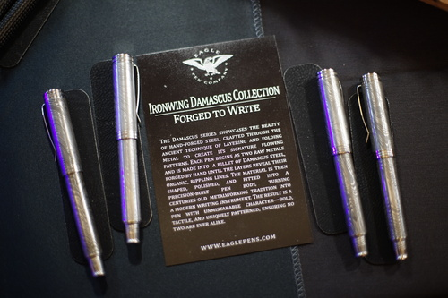
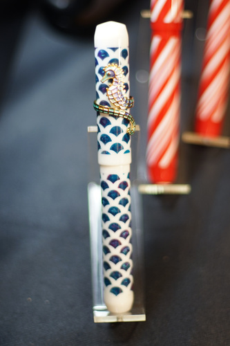
Eagle Pens had some nice pen bodies. They had damascus silver, copper, and bronze. The silver one was really heavy.
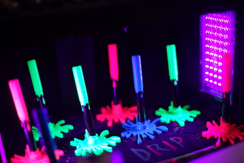
My personal favorite was their UV glow Splatoon pen line.
Magna Carta was in attendance and I got to try their stainless steel and gold flex nibs. Both nibs flexed really nicely. They were tempting, but I've read some not so great Reddit reviews. I didn't want to jump in on a not quite affordable pen. They also had some of the tiniest working fountain pens I had ever seen! Definitely not comfortable, but so cute~
Amarillo Stationery had a ton of branded stationery and accessories. He had a few custom inks, including cilantro and refried beans. Lots of people were walking around with his branded pen holders.
The one thing I loved about this pen show was that many booths had a stamp you could use in your journal. It was a lot of fun to collect them and I'm glad I brought a notebook! Never forget to bring a notebook to a pen show!
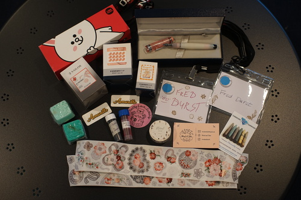
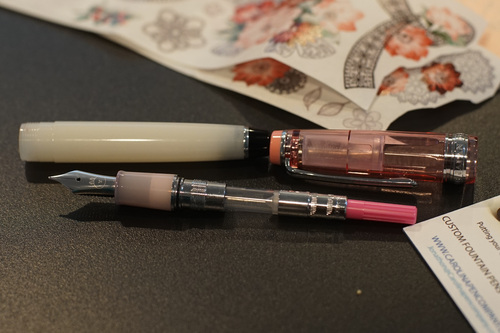
I was a little hesitant to get the the Cony Pro Gear Slim, but the LINE branding minimal and it was marked down to $200. It has a pink coverter! Cute!!
I thought about getting the LAMY x Itoya pink Safari for $95, but I went back to think harder about it and someone else had already bought it! I hope they enjoyed! $95 is a little much for a Safari for me anyway.
I didn't notice any room parties, but maybe I just wasn't invited to any! I'll have to scope them out harder next year.
Overall, we had a lot of fun! I'm not sure I can make this a multi day event, but it was a very fun way to spend the day and a lot of money.
Lens used: Canon FD 50mm f/1.4